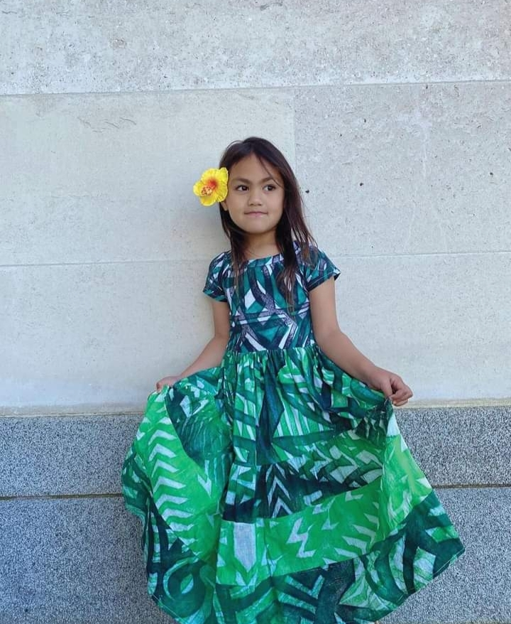

Contact Us
Mobile: 001 222 300400500, Email: tkklothing@icloud.com Order details and payments below.
We accept all major credit cards. PayPal and offer After-Pay options available.
See how TKK is reaching the world
This blog is updated daily to keep you in touch with the latest styles available from TKK. TKK supports and promotes good deeds of charitable projects for children around the world. Just recently TKK highlighted the Ukraine children who are caught in the war in their country. Their story how one family is moving forward and learning how to be safe, survive and how their children are finding ways to be positive in the environment that they live and are a strength to their parents.
Be an affiliate marketer for TKK
Promote on your social media. 30-day moneyback guarantee. We stand by the quality and manufacture of our clothing and offer a 30-day money back guarantee if you are not satisfied with your purchases.
Testimonials
Reviews & Rating
The creator of Teuila Kids Klothing is a mom like you!
Nancy is a hardworking grandma and mom. Growing up on the islands she was raised to work hard, gain knowledge and make something out of nothing. From humble beginnings Nancy continues to be a strong focussed business woman that loves her family and who has an eye for detail especially in the field of arts and crafts. With over 30 years business experience Nancy has always had a passion for fashion and is inspired by her grandchildren, strong church values, her upbringing, her surroundings and nature around her. Of Samoan- Nuiean descent Nancy loves what she creates. Nancy travels regularly to Samoa and Niue and her experiences with family, food, culture, heritage, pride, beach, weather, stories, history, fuel her inspirations and creativity.
